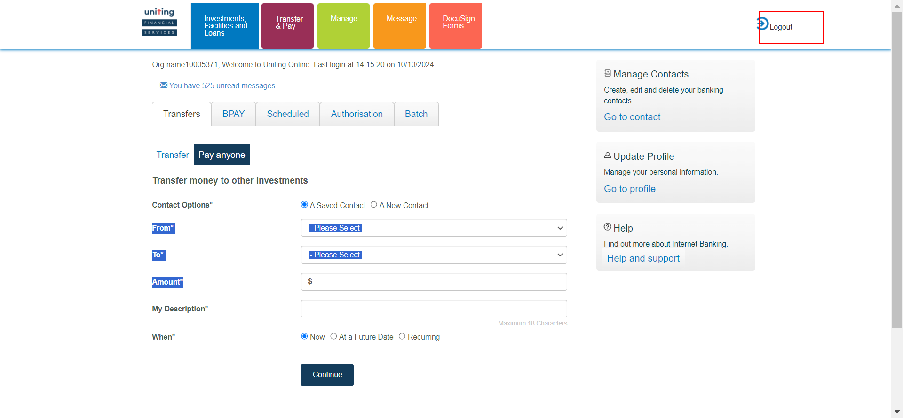

-
IBPayments
08:49:21 AM / 56:39:274 Fail
IBPayments
10.10.2024 08:49:21 10.10.2024 10:16:00 56:39:274 · #test-id=2FailPerform External Transfer IB new contact nowFailPerform External Transfer IB new contact nowWhen close all the other opened windows before loading the urlWhen User opens the IB URL Given I login with username "298010" and password "Temenos@123" of IB
Given I login with username "298010" and password "Temenos@123" of IB And click on Go to AccountsAnd click on Transfers and Pay buttonThen click on transfer buttonAnd Enter the details for external transfer new contact nowThen Confirm the external transfer IB new ContactAnd Review the external transfer new contact now payment
And click on Go to AccountsAnd click on Transfers and Pay buttonThen click on transfer buttonAnd Enter the details for external transfer new contact nowThen Confirm the external transfer IB new ContactAnd Review the external transfer new contact now payment Then logout from IbAnd Login to authorizer account with username "
Then logout from IbAnd Login to authorizer account with username ""and password " " com.frameium.stepdef.Hooks.afterEveryStep(io.cucumber.java.Scenario)And click on Go to AccountsStep skippedAnd click on Transfers and Pay buttonStep skippedThen click on Authorization buttonStep skippedAnd Authorize the External transfer new contact nowStep skippedThen Review authorization that the details of external transfer new contact is reflected correctlyStep skippedFailPerform External Transfer IB new contact nowWhen close all the other opened windows before loading the urlWhen User opens the IB URLcom.frameium.stepdef.Hooks.afterEveryStep(io.cucumber.java.Scenario) Given I login with username "298010" and password "Temenos@123" of IBStep skippedAnd click on Go to AccountsStep skippedAnd click on Transfers and Pay buttonStep skippedThen click on transfer buttonStep skippedAnd Enter the details for external transfer new contact nowStep skippedThen Confirm the external transfer IB new ContactStep skippedAnd Review the external transfer new contact now paymentStep skippedThen logout from IbStep skippedAnd Login to authorizer account with username "
Given I login with username "298010" and password "Temenos@123" of IBStep skippedAnd click on Go to AccountsStep skippedAnd click on Transfers and Pay buttonStep skippedThen click on transfer buttonStep skippedAnd Enter the details for external transfer new contact nowStep skippedThen Confirm the external transfer IB new ContactStep skippedAnd Review the external transfer new contact now paymentStep skippedThen logout from IbStep skippedAnd Login to authorizer account with username ""and password " " Step skippedAnd click on Go to AccountsStep skippedAnd click on Transfers and Pay buttonStep skippedThen click on Authorization buttonStep skippedAnd Authorize the External transfer new contact nowStep skippedThen Review authorization that the details of external transfer new contact is reflected correctlyStep skippedFailPerform External Transfer IB new contact RecurringFailPerform External Transfer IB new contact RecurringWhen close all the other opened windows before loading the urlWhen User opens the IB URLcom.frameium.stepdef.Ufs.IBPayments.afterStep(io.cucumber.java.Scenario)com.frameium.stepdef.Hooks.afterEveryStep(io.cucumber.java.Scenario)Given I login with username "298010" and password "Temenos@123" of IBStep skippedAnd click on Go to AccountsStep skippedAnd click on Transfers and Pay buttonStep skippedThen click on transfer buttonStep skippedAnd Enter the details for external transfer new contact RecurringStep skippedThen Confirm the external transfer IB new Contact RecurringStep skippedAnd Review the external transfer new contact Recurring paymentStep skippedThen logout from IbStep skippedAnd Login to authorizer account with username ""and password " " Step skippedAnd click on Go to AccountsStep skippedAnd click on Transfers and Pay buttonStep skippedThen click on Authorization buttonStep skippedAnd Authorize the External transfer new contact RecurringStep skippedThen Review authorization that the details of external transfer new contact recurring is reflected correctlyStep skippedFailPerform External Transfer IB new contact RecurringWhen close all the other opened windows before loading the urlWhen User opens the IB URLcom.frameium.stepdef.Ufs.IBPayments.afterStep(io.cucumber.java.Scenario)com.frameium.stepdef.Hooks.afterEveryStep(io.cucumber.java.Scenario)Given I login with username "298010" and password "Temenos@123" of IBStep skippedAnd click on Go to AccountsStep skippedAnd click on Transfers and Pay buttonStep skippedThen click on transfer buttonStep skippedAnd Enter the details for external transfer new contact RecurringStep skippedThen Confirm the external transfer IB new Contact RecurringStep skippedAnd Review the external transfer new contact Recurring paymentStep skippedThen logout from IbStep skippedAnd Login to authorizer account with username ""and password " " Step skippedAnd click on Go to AccountsStep skippedAnd click on Transfers and Pay buttonStep skippedThen click on Authorization buttonStep skippedAnd Authorize the External transfer new contact RecurringStep skippedThen Review authorization that the details of external transfer new contact recurring is reflected correctlyStep skippedFailPerform External Transfer IB new contact futureFailPerform External Transfer IB new contact futureWhen close all the other opened windows before loading the urlWhen User opens the IB URLcom.frameium.stepdef.Ufs.IBPayments.afterStep(io.cucumber.java.Scenario)com.frameium.stepdef.Hooks.afterEveryStep(io.cucumber.java.Scenario)Given I login with username "298010" and password "Temenos@123" of IBStep skippedAnd click on Go to AccountsStep skippedAnd click on Transfers and Pay buttonStep skippedThen click on transfer buttonStep skippedAnd Enter the details for external transfer new contact futureStep skippedThen Confirm the external transfer IB new Contact futureStep skippedAnd Review the external transfer new contact future paymentStep skippedThen logout from IbStep skippedAnd Login to authorizer account with username ""and password " " Step skippedAnd click on Go to AccountsStep skippedAnd click on Transfers and Pay buttonStep skippedThen click on Authorization buttonStep skippedAnd Authorize the External transfer new contact futureStep skippedThen Review authorization that the details of external transfer new contact future is reflected correctlyStep skippedFailPerform External Transfer IB new contact futureWhen close all the other opened windows before loading the urlWhen User opens the IB URLcom.frameium.stepdef.Ufs.IBPayments.afterStep(io.cucumber.java.Scenario)com.frameium.stepdef.Hooks.afterEveryStep(io.cucumber.java.Scenario)Given I login with username "298010" and password "Temenos@123" of IBStep skippedAnd click on Go to AccountsStep skippedAnd click on Transfers and Pay buttonStep skippedThen click on transfer buttonStep skippedAnd Enter the details for external transfer new contact futureStep skippedThen Confirm the external transfer IB new Contact futureStep skippedAnd Review the external transfer new contact future paymentStep skippedThen logout from IbStep skippedAnd Login to authorizer account with username ""and password " " Step skippedAnd click on Go to AccountsStep skippedAnd click on Transfers and Pay buttonStep skippedThen click on Authorization buttonStep skippedAnd Authorize the External transfer new contact futureStep skippedThen Review authorization that the details of external transfer new contact future is reflected correctlyStep skippedFailBpay now saved contactFailBpay now saved contactWhen close all the other opened windows before loading the urlWhen User opens the IB URLcom.frameium.stepdef.Ufs.IBPayments.afterStep(io.cucumber.java.Scenario)com.frameium.stepdef.Hooks.afterEveryStep(io.cucumber.java.Scenario)Given I login with username "298010" and password "Temenos@123" of IBStep skippedAnd click on Go to AccountsStep skippedAnd click on Transfers and Pay buttonStep skippedThen click on transfer buttonStep skippedThen Click on BpayStep skippedThen Enter the Bpay detailsStep skippedAnd confirm Bpay saved paymentStep skippedAnd Review the BPAY saved contact nowStep skippedThen logout from IbStep skippedAnd Login to authorizer account with username ""and password " " Step skippedAnd click on Go to AccountsStep skippedAnd click on Transfers and Pay buttonStep skippedThen click on Authorization buttonStep skippedThen Authorize the Bpay transfer nowStep skippedThen Review authorization that the details of BPAY now is reflected correctlyStep skippedFailBpay now saved contactWhen close all the other opened windows before loading the urlWhen User opens the IB URLcom.frameium.stepdef.Ufs.IBPayments.afterStep(io.cucumber.java.Scenario)com.frameium.stepdef.Hooks.afterEveryStep(io.cucumber.java.Scenario)Given I login with username "298010" and password "Temenos@123" of IBStep skippedAnd click on Go to AccountsStep skippedAnd click on Transfers and Pay buttonStep skippedThen click on transfer buttonStep skippedThen Click on BpayStep skippedThen Enter the Bpay detailsStep skippedAnd confirm Bpay saved paymentStep skippedAnd Review the BPAY saved contact nowStep skippedThen logout from IbStep skippedAnd Login to authorizer account with username ""and password " " Step skippedAnd click on Go to AccountsStep skippedAnd click on Transfers and Pay buttonStep skippedThen click on Authorization buttonStep skippedThen Authorize the Bpay transfer nowStep skippedThen Review authorization that the details of BPAY now is reflected correctlyStep skippedFailBpay future saved contactFailBpay future saved contactWhen close all the other opened windows before loading the urlWhen User opens the IB URLcom.frameium.stepdef.Ufs.IBPayments.afterStep(io.cucumber.java.Scenario)com.frameium.stepdef.Hooks.afterEveryStep(io.cucumber.java.Scenario)Given I login with username "298010" and password "Temenos@123" of IBStep skippedAnd click on Go to AccountsStep skippedAnd click on Transfers and Pay buttonStep skippedThen click on transfer buttonStep skippedThen Click on BpayStep skippedThen Enter the Bpay future detailsStep skippedAnd confirm Bpay saved payment futureStep skippedAnd Review the BPAY saved contact futureStep skippedThen logout from IbStep skippedAnd Login to authorizer account with username ""and password " " Step skippedAnd click on Go to AccountsStep skippedAnd click on Transfers and Pay buttonStep skippedThen click on Authorization buttonStep skippedThen Authorize the Bpay transfer futureStep skippedThen Review authorization that the details of BPAY future is reflected correctlyStep skippedFailBpay future saved contactWhen close all the other opened windows before loading the urlWhen User opens the IB URLcom.frameium.stepdef.Ufs.IBPayments.afterStep(io.cucumber.java.Scenario)com.frameium.stepdef.Hooks.afterEveryStep(io.cucumber.java.Scenario)Given I login with username "298010" and password "Temenos@123" of IBStep skippedAnd click on Go to AccountsStep skippedAnd click on Transfers and Pay buttonStep skippedThen click on transfer buttonStep skippedThen Click on BpayStep skippedThen Enter the Bpay future detailsStep skippedAnd confirm Bpay saved payment futureStep skippedAnd Review the BPAY saved contact futureStep skippedThen logout from IbStep skippedAnd Login to authorizer account with username ""and password " " Step skippedAnd click on Go to AccountsStep skippedAnd click on Transfers and Pay buttonStep skippedThen click on Authorization buttonStep skippedThen Authorize the Bpay transfer futureStep skippedThen Review authorization that the details of BPAY future is reflected correctlyStep skippedFailBpay recurrring saved contactFailBpay recurrring saved contactWhen close all the other opened windows before loading the urlWhen User opens the IB URLcom.frameium.stepdef.Ufs.IBPayments.afterStep(io.cucumber.java.Scenario)com.frameium.stepdef.Hooks.afterEveryStep(io.cucumber.java.Scenario)Given I login with username "298010" and password "Temenos@123" of IBStep skippedAnd click on Go to AccountsStep skippedAnd click on Transfers and Pay buttonStep skippedThen click on transfer buttonStep skippedThen Click on BpayStep skippedThen Enter the Bpay recurring detailsStep skippedAnd confirm Bpay saved payment recurringStep skippedAnd Review the BPAY saved contact recurringStep skippedThen logout from IbStep skippedAnd Login to authorizer account with username ""and password " " Step skippedAnd click on Go to AccountsStep skippedAnd click on Transfers and Pay buttonStep skippedThen click on Authorization buttonStep skippedThen Authorize the Bpay transfer recurringStep skippedThen Review authorization that the details of BPAY recurring is reflected correctlyStep skippedFailBpay recurrring saved contactWhen close all the other opened windows before loading the urlWhen User opens the IB URLcom.frameium.stepdef.Ufs.IBPayments.afterStep(io.cucumber.java.Scenario)com.frameium.stepdef.Hooks.afterEveryStep(io.cucumber.java.Scenario)Given I login with username "298010" and password "Temenos@123" of IBStep skippedAnd click on Go to AccountsStep skippedAnd click on Transfers and Pay buttonStep skippedThen click on transfer buttonStep skippedThen Click on BpayStep skippedThen Enter the Bpay recurring detailsStep skippedAnd confirm Bpay saved payment recurringStep skippedAnd Review the BPAY saved contact recurringStep skippedThen logout from IbStep skippedAnd Login to authorizer account with username ""and password " " Step skippedAnd click on Go to AccountsStep skippedAnd click on Transfers and Pay buttonStep skippedThen click on Authorization buttonStep skippedThen Authorize the Bpay transfer recurringStep skippedThen Review authorization that the details of BPAY recurring is reflected correctlyStep skippedFailBpay now new contactFailBpay now new contactWhen close all the other opened windows before loading the urlWhen User opens the IB URLcom.frameium.stepdef.Ufs.IBPayments.afterStep(io.cucumber.java.Scenario)com.frameium.stepdef.Hooks.afterEveryStep(io.cucumber.java.Scenario)Given I login with username "298010" and password "Temenos@123" of IBStep skippedAnd click on Go to AccountsStep skippedAnd click on Transfers and Pay buttonStep skippedThen click on transfer buttonStep skippedThen Click on BpayStep skippedThen Enter the Bpay new contact detailsStep skippedAnd confirm Bpay new contact paymentStep skippedAnd Review the BPAY new contact nowStep skippedThen logout from IbStep skippedAnd Login to authorizer account with username ""and password " " Step skippedAnd click on Go to AccountsStep skippedAnd click on Transfers and Pay buttonStep skippedThen click on Authorization buttonStep skippedThen Authorize the Bpay transfer new contact nowStep skippedThen Review authorization that the details of BPAY now is reflected correctlyStep skippedFailBpay now new contactWhen close all the other opened windows before loading the urlWhen User opens the IB URLcom.frameium.stepdef.Ufs.IBPayments.afterStep(io.cucumber.java.Scenario)com.frameium.stepdef.Hooks.afterEveryStep(io.cucumber.java.Scenario)Given I login with username "298010" and password "Temenos@123" of IBStep skippedAnd click on Go to AccountsStep skippedAnd click on Transfers and Pay buttonStep skippedThen click on transfer buttonStep skippedThen Click on BpayStep skippedThen Enter the Bpay new contact detailsStep skippedAnd confirm Bpay new contact paymentStep skippedAnd Review the BPAY new contact nowStep skippedThen logout from IbStep skippedAnd Login to authorizer account with username ""and password " " Step skippedAnd click on Go to AccountsStep skippedAnd click on Transfers and Pay buttonStep skippedThen click on Authorization buttonStep skippedThen Authorize the Bpay transfer new contact nowStep skippedThen Review authorization that the details of BPAY now is reflected correctlyStep skippedFailBpay recurring new contactFailBpay recurring new contactWhen close all the other opened windows before loading the urlcom.frameium.stepdef.Ufs.IBPayments.afterStep(io.cucumber.java.Scenario)com.frameium.stepdef.Hooks.afterEveryStep(io.cucumber.java.Scenario)When User opens the IB URLStep skippedGiven I login with username "298010" and password "Temenos@123" of IBStep skippedAnd click on Go to AccountsStep skippedAnd click on Transfers and Pay buttonStep skippedThen click on transfer buttonStep skippedThen Click on BpayStep skippedThen Enter the Bpay new contact recurring detailsStep skippedAnd confirm Bpay new contact recurring paymentStep skippedAnd Review the BPAY new contact recurringStep skippedThen logout from IbStep skippedAnd Login to authorizer account with username ""and password " " Step skippedAnd click on Go to AccountsStep skippedAnd click on Transfers and Pay buttonStep skippedThen click on Authorization buttonStep skippedThen Authorize the Bpay transfer new contact recurringStep skippedThen Review authorization that the details of BPAY recurring is reflected correctlyStep skippedFailBpay recurring new contactWhen close all the other opened windows before loading the urlcom.frameium.stepdef.Ufs.IBPayments.afterStep(io.cucumber.java.Scenario)com.frameium.stepdef.Hooks.afterEveryStep(io.cucumber.java.Scenario)When User opens the IB URLStep skippedGiven I login with username "298010" and password "Temenos@123" of IBStep skippedAnd click on Go to AccountsStep skippedAnd click on Transfers and Pay buttonStep skippedThen click on transfer buttonStep skippedThen Click on BpayStep skippedThen Enter the Bpay new contact recurring detailsStep skippedAnd confirm Bpay new contact recurring paymentStep skippedAnd Review the BPAY new contact recurringStep skippedThen logout from IbStep skippedAnd Login to authorizer account with username ""and password " " Step skippedAnd click on Go to AccountsStep skippedAnd click on Transfers and Pay buttonStep skippedThen click on Authorization buttonStep skippedThen Authorize the Bpay transfer new contact recurringStep skippedThen Review authorization that the details of BPAY recurring is reflected correctlyStep skippedFailBpay future new contactFailBpay future new contactWhen close all the other opened windows before loading the urlcom.frameium.stepdef.Ufs.IBPayments.afterStep(io.cucumber.java.Scenario)com.frameium.stepdef.Hooks.afterEveryStep(io.cucumber.java.Scenario)When User opens the IB URLStep skippedGiven I login with username "298010" and password "Temenos@123" of IBStep skippedAnd click on Go to AccountsStep skippedAnd click on Transfers and Pay buttonStep skippedThen click on transfer buttonStep skippedThen Click on BpayStep skippedThen Enter the Bpay new contact future detailsStep skippedAnd confirm Bpay new contact future paymentStep skippedAnd Review the BPAY new contact futureStep skippedThen logout from IbStep skippedAnd Login to authorizer account with username ""and password " " Step skippedAnd click on Go to AccountsStep skippedAnd click on Transfers and Pay buttonStep skippedThen click on Authorization buttonStep skippedThen Authorize the Bpay transfer new contact futureStep skippedThen Review authorization that the details of BPAY future is reflected correctlyStep skippedFailBpay future new contactWhen close all the other opened windows before loading the urlcom.frameium.stepdef.Ufs.IBPayments.afterStep(io.cucumber.java.Scenario)com.frameium.stepdef.Hooks.afterEveryStep(io.cucumber.java.Scenario)When User opens the IB URLStep skippedGiven I login with username "298010" and password "Temenos@123" of IBStep skippedAnd click on Go to AccountsStep skippedAnd click on Transfers and Pay buttonStep skippedThen click on transfer buttonStep skippedThen Click on BpayStep skippedThen Enter the Bpay new contact future detailsStep skippedAnd confirm Bpay new contact future paymentStep skippedAnd Review the BPAY new contact futureStep skippedThen logout from IbStep skippedAnd Login to authorizer account with username ""and password " " Step skippedAnd click on Go to AccountsStep skippedAnd click on Transfers and Pay buttonStep skippedThen click on Authorization buttonStep skippedThen Authorize the Bpay transfer new contact futureStep skippedThen Review authorization that the details of BPAY future is reflected correctlyStep skippedFailSecure and Urgent messageFailSecure and Urgent messageWhen close all the other opened windows before loading the urlcom.frameium.stepdef.Ufs.IBPayments.afterStep(io.cucumber.java.Scenario)com.frameium.stepdef.Hooks.afterEveryStep(io.cucumber.java.Scenario)When User opens the IBM URLStep skippedWhen Login to IBMStep skippedWhen we send the Normal messageStep skippedWhen We send the urgent messageStep skippedWhen User opens the IB URLStep skippedGiven I login with username "298010" and password "Temenos@123" of IBStep skippedThen verify whether the urgent message is displayed in the landing pageStep skippedAnd click on Go to AccountsStep skippedThen check whether the urgent message is displayed on the inboxStep skippedThen check whether the normal message is displayed on the inboxStep skippedFailSecure and Urgent messageWhen close all the other opened windows before loading the urlcom.frameium.stepdef.Ufs.IBPayments.afterStep(io.cucumber.java.Scenario)com.frameium.stepdef.Hooks.afterEveryStep(io.cucumber.java.Scenario)When User opens the IBM URLStep skippedWhen Login to IBMStep skippedWhen we send the Normal messageStep skippedWhen We send the urgent messageStep skippedWhen User opens the IB URLStep skippedGiven I login with username "298010" and password "Temenos@123" of IBStep skippedThen verify whether the urgent message is displayed in the landing pageStep skippedAnd click on Go to AccountsStep skippedThen check whether the urgent message is displayed on the inboxStep skippedThen check whether the normal message is displayed on the inboxStep skippedFailpassword changeFailpassword changeWhen close all the other opened windows before loading the urlcom.frameium.stepdef.Ufs.IBPayments.afterStep(io.cucumber.java.Scenario)com.frameium.stepdef.Hooks.afterEveryStep(io.cucumber.java.Scenario)When User opens the IB URLStep skippedWhen Login to IB for changing passwordStep skippedAnd click on Go to AccountsStep skippedWhen click on pasword changeStep skippedWhen change the passwordStep skippedFailpassword changeWhen close all the other opened windows before loading the urlcom.frameium.stepdef.Ufs.IBPayments.afterStep(io.cucumber.java.Scenario)com.frameium.stepdef.Hooks.afterEveryStep(io.cucumber.java.Scenario)When User opens the IB URLStep skippedWhen Login to IB for changing passwordStep skippedAnd click on Go to AccountsStep skippedWhen click on pasword changeStep skippedWhen change the passwordStep skippedFailChecking123 inbox message countFailChecking123 inbox message countWhen close all the other opened windows before loading the urlcom.frameium.stepdef.Ufs.IBPayments.afterStep(io.cucumber.java.Scenario)com.frameium.stepdef.Hooks.afterEveryStep(io.cucumber.java.Scenario)When User opens the IB URLStep skippedGiven I login with username "298010" and password "Temenos@123" of IBStep skippedAnd click on Go to AccountsStep skippedWhen Click on inboxStep skippedWhen read the messageStep skippedThen check whether the message count decreasedStep skippedFailChecking123 inbox message countWhen close all the other opened windows before loading the urlcom.frameium.stepdef.Ufs.IBPayments.afterStep(io.cucumber.java.Scenario)com.frameium.stepdef.Hooks.afterEveryStep(io.cucumber.java.Scenario)When User opens the IB URLStep skippedGiven I login with username "298010" and password "Temenos@123" of IBStep skippedAnd click on Go to AccountsStep skippedWhen Click on inboxStep skippedWhen read the messageStep skippedThen check whether the message count decreasedStep skippedFailAdding new contacts-transferFailAdding new contacts-transferWhen close all the other opened windows before loading the urlcom.frameium.stepdef.Ufs.IBPayments.afterStep(io.cucumber.java.Scenario)com.frameium.stepdef.Hooks.afterEveryStep(io.cucumber.java.Scenario)When User opens the IB URLStep skippedGiven I login with username "298010" and password "Temenos@123" of IBStep skippedAnd click on Go to AccountsStep skippedWhen Click on add contactStep skippedWhen add the new contact detailsStep skippedThen confirm whether the details are correctStep skippedWhen edit the newly added contact detailsStep skippedWhen delete the newly added contactStep skippedFailAdding new contacts-transferWhen close all the other opened windows before loading the urlcom.frameium.stepdef.Ufs.IBPayments.afterStep(io.cucumber.java.Scenario)com.frameium.stepdef.Hooks.afterEveryStep(io.cucumber.java.Scenario)When User opens the IB URLStep skippedGiven I login with username "298010" and password "Temenos@123" of IBStep skippedAnd click on Go to AccountsStep skippedWhen Click on add contactStep skippedWhen add the new contact detailsStep skippedThen confirm whether the details are correctStep skippedWhen edit the newly added contact detailsStep skippedWhen delete the newly added contactStep skippedFailAdding new contacts-BPAYFailAdding new contacts-BPAYWhen close all the other opened windows before loading the urlcom.frameium.stepdef.Ufs.IBPayments.afterStep(io.cucumber.java.Scenario)com.frameium.stepdef.Hooks.afterEveryStep(io.cucumber.java.Scenario)When User opens the IB URLStep skippedGiven I login with username "298010" and password "Temenos@123" of IBStep skippedAnd click on Go to AccountsStep skippedWhen Click on add contactStep skippedWhen add the new contact details of BpayStep skippedThen confirm whether the newly added BPAY details are correctStep skippedWhen edit the newly added BPAY contact detailsStep skippedWhen delete the newly added BPAY contactStep skippedFailAdding new contacts-BPAYWhen close all the other opened windows before loading the urlcom.frameium.stepdef.Ufs.IBPayments.afterStep(io.cucumber.java.Scenario)com.frameium.stepdef.Hooks.afterEveryStep(io.cucumber.java.Scenario)When User opens the IB URLStep skippedGiven I login with username "298010" and password "Temenos@123" of IBStep skippedAnd click on Go to AccountsStep skippedWhen Click on add contactStep skippedWhen add the new contact details of BpayStep skippedThen confirm whether the newly added BPAY details are correctStep skippedWhen edit the newly added BPAY contact detailsStep skippedWhen delete the newly added BPAY contactStep skippedFailAdding new contacts-BPAYWhen close all the other opened windows before loading the urlcom.frameium.stepdef.Ufs.IBPayments.afterStep(io.cucumber.java.Scenario)com.frameium.stepdef.Hooks.afterEveryStep(io.cucumber.java.Scenario)When User opens the IB URLStep skippedGiven I login with username "298010" and password "Temenos@123" of IBStep skippedAnd click on Go to AccountsStep skippedThen check whether the session history is showing the correct detailsStep skippedFailAdding new contacts-BPAYWhen close all the other opened windows before loading the urlcom.frameium.stepdef.Ufs.IBPayments.afterStep(io.cucumber.java.Scenario)com.frameium.stepdef.Hooks.afterEveryStep(io.cucumber.java.Scenario)When User opens the IB URLStep skippedGiven I login with username "298010" and password "Temenos@123" of IBStep skippedAnd click on Go to AccountsStep skippedThen check whether the session history is showing the correct detailsStep skippedFailBatch template-Create/edit/deleteFailBatch template-Create/edit/deleteWhen close all the other opened windows before loading the urlcom.frameium.stepdef.Ufs.IBPayments.afterStep(io.cucumber.java.Scenario)com.frameium.stepdef.Hooks.afterEveryStep(io.cucumber.java.Scenario)When User opens the IB URLStep skippedGiven I login with username "298010" and password "Temenos@123" of IBStep skippedAnd click on Go to AccountsStep skippedAnd click on Transfers and Pay buttonStep skippedThen create new batch templateStep skippedThen Delete the newly created batch templateStep skippedFailBatch template-Create/edit/deleteWhen close all the other opened windows before loading the urlcom.frameium.stepdef.Ufs.IBPayments.afterStep(io.cucumber.java.Scenario)com.frameium.stepdef.Hooks.afterEveryStep(io.cucumber.java.Scenario)When User opens the IB URLStep skippedGiven I login with username "298010" and password "Temenos@123" of IBStep skippedAnd click on Go to AccountsStep skippedAnd click on Transfers and Pay buttonStep skippedThen create new batch templateStep skippedThen Delete the newly created batch templateStep skippedFailBatch template-Create/edit/deleteWhen close all the other opened windows before loading the urlcom.frameium.stepdef.Ufs.IBPayments.afterStep(io.cucumber.java.Scenario)com.frameium.stepdef.Hooks.afterEveryStep(io.cucumber.java.Scenario)When User opens the IB URLStep skippedGiven I login with username "298010" and password "Temenos@123" of IBStep skippedAnd click on Go to AccountsStep skippedThen compose messageStep skippedFailBatch template-Create/edit/deleteWhen close all the other opened windows before loading the urlcom.frameium.stepdef.Ufs.IBPayments.afterStep(io.cucumber.java.Scenario)com.frameium.stepdef.Hooks.afterEveryStep(io.cucumber.java.Scenario)When User opens the IB URLStep skippedGiven I login with username "298010" and password "Temenos@123" of IBStep skippedAnd click on Go to AccountsStep skippedThen compose messageStep skippedFaildebit batch paymentFaildebit batch paymentWhen close all the other opened windows before loading the urlcom.frameium.stepdef.Ufs.IBPayments.afterStep(io.cucumber.java.Scenario)com.frameium.stepdef.Hooks.afterEveryStep(io.cucumber.java.Scenario)When User opens the IB URLStep skippedGiven I login with username "298010" and password "Temenos@123" of IBStep skippedAnd click on Go to AccountsStep skippedAnd click on Transfers and Pay buttonStep skippedThen Click on BatchStep skippedAnd Enter the details of batchpayment fileStep skippedThen Review the batch payment templateStep skippedThen logout from IbStep skippedAnd Login to authorizer account with username ""and password " " Step skippedAnd click on Go to AccountsStep skippedAnd click on Transfers and Pay buttonStep skippedThen click on Authorization buttonStep skippedAnd open the batch payment that need to be authorisedStep skippedThen authorise the batch paymentStep skippedThen review authorization that the details of debitbatchpaymentsfileStep skippedWhen User opens the T24 UrlStep skippedThen User should be able to login to T24Step skippedThen The user should be able to fill the commandlineStep skippedAnd The user should be able to click on general enquiries buttomStep skippedAnd click on the IB-view of account entriesStep skippedThen Enter the account number of debitbatchpaymentsfileStep skippedAnd click on find buttonStep skippedThen verify the narratives of debitbatchpaymentsfileStep skippedFaildebit batch paymentWhen close all the other opened windows before loading the urlcom.frameium.stepdef.Ufs.IBPayments.afterStep(io.cucumber.java.Scenario)com.frameium.stepdef.Hooks.afterEveryStep(io.cucumber.java.Scenario)When User opens the IB URLStep skippedGiven I login with username "298010" and password "Temenos@123" of IBStep skippedAnd click on Go to AccountsStep skippedAnd click on Transfers and Pay buttonStep skippedThen Click on BatchStep skippedAnd Enter the details of batchpayment fileStep skippedThen Review the batch payment templateStep skippedThen logout from IbStep skippedAnd Login to authorizer account with username ""and password " " Step skippedAnd click on Go to AccountsStep skippedAnd click on Transfers and Pay buttonStep skippedThen click on Authorization buttonStep skippedAnd open the batch payment that need to be authorisedStep skippedThen authorise the batch paymentStep skippedThen review authorization that the details of debitbatchpaymentsfileStep skippedWhen User opens the T24 UrlStep skippedThen User should be able to login to T24Step skippedThen The user should be able to fill the commandlineStep skippedAnd The user should be able to click on general enquiries buttomStep skippedAnd click on the IB-view of account entriesStep skippedThen Enter the account number of debitbatchpaymentsfileStep skippedAnd click on find buttonStep skippedThen verify the narratives of debitbatchpaymentsfileStep skippedFailcredit batch paymentFailcredit batch paymentWhen close all the other opened windows before loading the urlcom.frameium.stepdef.Ufs.IBPayments.afterStep(io.cucumber.java.Scenario)com.frameium.stepdef.Hooks.afterEveryStep(io.cucumber.java.Scenario)When User opens the IB URLStep skippedGiven I login with username "298010" and password "Temenos@123" of IBStep skippedAnd click on Go to AccountsStep skippedAnd click on Transfers and Pay buttonStep skippedThen Click on BatchStep skippedAnd Enter the details of Credit batchpayment fileStep skippedThen Review the batch payment templateStep skippedThen logout from IbStep skippedAnd Login to authorizer account with username ""and password " " Step skippedAnd click on Go to AccountsStep skippedAnd click on Transfers and Pay buttonStep skippedThen click on Authorization buttonStep skippedAnd open the batch payment that need to be authorisedStep skippedThen authorise the credit batch payment fileStep skippedThen review authorization that the details of creditbatchpaymentsfileStep skippedWhen User opens the T24 UrlStep skippedThen User should be able to login to T24Step skippedThen The user should be able to fill the commandlineStep skippedAnd The user should be able to click on general enquiries buttomStep skippedAnd click on the IB-view of account entriesStep skippedThen Enter the account number of creditbatchpaymentsfileStep skippedAnd click on find buttonStep skippedThen verify the narratives of creditbatchpaymentsfileStep skippedFailcredit batch paymentWhen close all the other opened windows before loading the urlcom.frameium.stepdef.Ufs.IBPayments.afterStep(io.cucumber.java.Scenario)com.frameium.stepdef.Hooks.afterEveryStep(io.cucumber.java.Scenario)When User opens the IB URLStep skippedGiven I login with username "298010" and password "Temenos@123" of IBStep skippedAnd click on Go to AccountsStep skippedAnd click on Transfers and Pay buttonStep skippedThen Click on BatchStep skippedAnd Enter the details of Credit batchpayment fileStep skippedThen Review the batch payment templateStep skippedThen logout from IbStep skippedAnd Login to authorizer account with username ""and password " " Step skippedAnd click on Go to AccountsStep skippedAnd click on Transfers and Pay buttonStep skippedThen click on Authorization buttonStep skippedAnd open the batch payment that need to be authorisedStep skippedThen authorise the credit batch payment fileStep skippedThen review authorization that the details of creditbatchpaymentsfileStep skippedWhen User opens the T24 UrlStep skippedThen User should be able to login to T24Step skippedThen The user should be able to fill the commandlineStep skippedAnd The user should be able to click on general enquiries buttomStep skippedAnd click on the IB-view of account entriesStep skippedThen Enter the account number of creditbatchpaymentsfileStep skippedAnd click on find buttonStep skippedThen verify the narratives of creditbatchpaymentsfileStep skipped
-
java.lang.IllegalArgumentException
1 tests
java.lang.IllegalArgumentException
1 failedStatus Timestamp TestName Fail 08:53:42 AM And Login to authorizer account with username " "and password " " IBPayments.Perform External Transfer IB new contact now.And Login to authorizer account with username ""and password " " -
org.openqa.selenium.WebDriverException
1 tests
org.openqa.selenium.WebDriverException
1 failedStatus Timestamp TestName Fail 08:57:25 AM When User opens the IB URL IBPayments.Perform External Transfer IB new contact Recurring.When User opens the IB URLFail 09:00:37 AM When User opens the IB URL IBPayments.Perform External Transfer IB new contact Recurring.When User opens the IB URLFail 09:02:44 AM When User opens the IB URL IBPayments.Perform External Transfer IB new contact future.When User opens the IB URLFail 09:04:49 AM When User opens the IB URL IBPayments.Perform External Transfer IB new contact future.When User opens the IB URLFail 09:06:52 AM When User opens the IB URL IBPayments.Bpay now saved contact.When User opens the IB URLFail 09:08:54 AM When User opens the IB URL IBPayments.Bpay now saved contact.When User opens the IB URLFail 09:10:58 AM When User opens the IB URL IBPayments.Bpay future saved contact.When User opens the IB URLFail 09:13:03 AM When User opens the IB URL IBPayments.Bpay future saved contact.When User opens the IB URLFail 09:15:06 AM When User opens the IB URL IBPayments.Bpay recurrring saved contact.When User opens the IB URLFail 09:17:09 AM When User opens the IB URL IBPayments.Bpay recurrring saved contact.When User opens the IB URLFail 09:19:13 AM When User opens the IB URL IBPayments.Bpay now new contact.When User opens the IB URLFail 09:21:16 AM When User opens the IB URL IBPayments.Bpay now new contact.When User opens the IB URLFail 09:21:17 AM com.frameium.stepdef.Ufs.IBPayments.afterStep(io.cucumber.java.Scenario) IBPayments.Bpay now new contact.com.frameium.stepdef.Ufs.IBPayments.afterStep(io.cucumber.java.Scenario)Fail 09:21:23 AM com.frameium.stepdef.Hooks.afterEveryStep(io.cucumber.java.Scenario) IBPayments.Bpay now new contact.com.frameium.stepdef.Hooks.afterEveryStep(io.cucumber.java.Scenario)Fail 09:21:24 AM When close all the other opened windows before loading the url IBPayments.Bpay recurring new contact.When close all the other opened windows before loading the urlFail 09:21:25 AM com.frameium.stepdef.Ufs.IBPayments.afterStep(io.cucumber.java.Scenario) IBPayments.Bpay recurring new contact.com.frameium.stepdef.Ufs.IBPayments.afterStep(io.cucumber.java.Scenario)Fail 09:21:25 AM com.frameium.stepdef.Hooks.afterEveryStep(io.cucumber.java.Scenario) IBPayments.Bpay recurring new contact.com.frameium.stepdef.Hooks.afterEveryStep(io.cucumber.java.Scenario)Fail 09:21:27 AM When close all the other opened windows before loading the url IBPayments.Bpay recurring new contact.When close all the other opened windows before loading the urlFail 09:21:28 AM com.frameium.stepdef.Ufs.IBPayments.afterStep(io.cucumber.java.Scenario) IBPayments.Bpay recurring new contact.com.frameium.stepdef.Ufs.IBPayments.afterStep(io.cucumber.java.Scenario)Fail 09:21:28 AM com.frameium.stepdef.Hooks.afterEveryStep(io.cucumber.java.Scenario) IBPayments.Bpay recurring new contact.com.frameium.stepdef.Hooks.afterEveryStep(io.cucumber.java.Scenario)Fail 10:15:20 AM When close all the other opened windows before loading the url IBPayments.Bpay future new contact.When close all the other opened windows before loading the urlFail 10:15:21 AM com.frameium.stepdef.Ufs.IBPayments.afterStep(io.cucumber.java.Scenario) IBPayments.Bpay future new contact.com.frameium.stepdef.Ufs.IBPayments.afterStep(io.cucumber.java.Scenario)Fail 10:15:22 AM com.frameium.stepdef.Hooks.afterEveryStep(io.cucumber.java.Scenario) IBPayments.Bpay future new contact.com.frameium.stepdef.Hooks.afterEveryStep(io.cucumber.java.Scenario)Fail 10:15:24 AM When close all the other opened windows before loading the url IBPayments.Bpay future new contact.When close all the other opened windows before loading the urlFail 10:15:25 AM com.frameium.stepdef.Ufs.IBPayments.afterStep(io.cucumber.java.Scenario) IBPayments.Bpay future new contact.com.frameium.stepdef.Ufs.IBPayments.afterStep(io.cucumber.java.Scenario)Fail 10:15:26 AM com.frameium.stepdef.Hooks.afterEveryStep(io.cucumber.java.Scenario) IBPayments.Bpay future new contact.com.frameium.stepdef.Hooks.afterEveryStep(io.cucumber.java.Scenario)Fail 10:15:26 AM When close all the other opened windows before loading the url IBPayments.Secure and Urgent message.When close all the other opened windows before loading the urlFail 10:15:27 AM com.frameium.stepdef.Ufs.IBPayments.afterStep(io.cucumber.java.Scenario) IBPayments.Secure and Urgent message.com.frameium.stepdef.Ufs.IBPayments.afterStep(io.cucumber.java.Scenario)Fail 10:15:27 AM com.frameium.stepdef.Hooks.afterEveryStep(io.cucumber.java.Scenario) IBPayments.Secure and Urgent message.com.frameium.stepdef.Hooks.afterEveryStep(io.cucumber.java.Scenario)Fail 10:15:28 AM When close all the other opened windows before loading the url IBPayments.Secure and Urgent message.When close all the other opened windows before loading the urlFail 10:15:29 AM com.frameium.stepdef.Ufs.IBPayments.afterStep(io.cucumber.java.Scenario) IBPayments.Secure and Urgent message.com.frameium.stepdef.Ufs.IBPayments.afterStep(io.cucumber.java.Scenario)Fail 10:15:29 AM com.frameium.stepdef.Hooks.afterEveryStep(io.cucumber.java.Scenario) IBPayments.Secure and Urgent message.com.frameium.stepdef.Hooks.afterEveryStep(io.cucumber.java.Scenario)Fail 10:15:29 AM When close all the other opened windows before loading the url IBPayments.password change.When close all the other opened windows before loading the urlFail 10:15:31 AM com.frameium.stepdef.Ufs.IBPayments.afterStep(io.cucumber.java.Scenario) IBPayments.password change.com.frameium.stepdef.Ufs.IBPayments.afterStep(io.cucumber.java.Scenario)Fail 10:15:31 AM com.frameium.stepdef.Hooks.afterEveryStep(io.cucumber.java.Scenario) IBPayments.password change.com.frameium.stepdef.Hooks.afterEveryStep(io.cucumber.java.Scenario)Fail 10:15:31 AM When close all the other opened windows before loading the url IBPayments.password change.When close all the other opened windows before loading the urlFail 10:15:32 AM com.frameium.stepdef.Ufs.IBPayments.afterStep(io.cucumber.java.Scenario) IBPayments.password change.com.frameium.stepdef.Ufs.IBPayments.afterStep(io.cucumber.java.Scenario)Fail 10:15:32 AM com.frameium.stepdef.Hooks.afterEveryStep(io.cucumber.java.Scenario) IBPayments.password change.com.frameium.stepdef.Hooks.afterEveryStep(io.cucumber.java.Scenario)Fail 10:15:33 AM When close all the other opened windows before loading the url IBPayments.Checking123 inbox message count.When close all the other opened windows before loading the urlFail 10:15:34 AM com.frameium.stepdef.Ufs.IBPayments.afterStep(io.cucumber.java.Scenario) IBPayments.Checking123 inbox message count.com.frameium.stepdef.Ufs.IBPayments.afterStep(io.cucumber.java.Scenario)Fail 10:15:34 AM com.frameium.stepdef.Hooks.afterEveryStep(io.cucumber.java.Scenario) IBPayments.Checking123 inbox message count.com.frameium.stepdef.Hooks.afterEveryStep(io.cucumber.java.Scenario)Fail 10:15:34 AM When close all the other opened windows before loading the url IBPayments.Checking123 inbox message count.When close all the other opened windows before loading the urlFail 10:15:35 AM com.frameium.stepdef.Ufs.IBPayments.afterStep(io.cucumber.java.Scenario) IBPayments.Checking123 inbox message count.com.frameium.stepdef.Ufs.IBPayments.afterStep(io.cucumber.java.Scenario)Fail 10:15:38 AM com.frameium.stepdef.Hooks.afterEveryStep(io.cucumber.java.Scenario) IBPayments.Checking123 inbox message count.com.frameium.stepdef.Hooks.afterEveryStep(io.cucumber.java.Scenario)Fail 10:15:39 AM When close all the other opened windows before loading the url IBPayments.Adding new contacts-transfer.When close all the other opened windows before loading the urlFail 10:15:40 AM com.frameium.stepdef.Ufs.IBPayments.afterStep(io.cucumber.java.Scenario) IBPayments.Adding new contacts-transfer.com.frameium.stepdef.Ufs.IBPayments.afterStep(io.cucumber.java.Scenario)Fail 10:15:40 AM com.frameium.stepdef.Hooks.afterEveryStep(io.cucumber.java.Scenario) IBPayments.Adding new contacts-transfer.com.frameium.stepdef.Hooks.afterEveryStep(io.cucumber.java.Scenario)Fail 10:15:40 AM When close all the other opened windows before loading the url IBPayments.Adding new contacts-transfer.When close all the other opened windows before loading the urlFail 10:15:41 AM com.frameium.stepdef.Ufs.IBPayments.afterStep(io.cucumber.java.Scenario) IBPayments.Adding new contacts-transfer.com.frameium.stepdef.Ufs.IBPayments.afterStep(io.cucumber.java.Scenario)Fail 10:15:41 AM com.frameium.stepdef.Hooks.afterEveryStep(io.cucumber.java.Scenario) IBPayments.Adding new contacts-transfer.com.frameium.stepdef.Hooks.afterEveryStep(io.cucumber.java.Scenario)Fail 10:15:41 AM When close all the other opened windows before loading the url IBPayments.Adding new contacts-BPAY.When close all the other opened windows before loading the urlFail 10:15:42 AM com.frameium.stepdef.Ufs.IBPayments.afterStep(io.cucumber.java.Scenario) IBPayments.Adding new contacts-BPAY.com.frameium.stepdef.Ufs.IBPayments.afterStep(io.cucumber.java.Scenario)Fail 10:15:43 AM com.frameium.stepdef.Hooks.afterEveryStep(io.cucumber.java.Scenario) IBPayments.Adding new contacts-BPAY.com.frameium.stepdef.Hooks.afterEveryStep(io.cucumber.java.Scenario)Fail 10:15:43 AM When close all the other opened windows before loading the url IBPayments.Adding new contacts-BPAY.When close all the other opened windows before loading the urlFail 10:15:44 AM com.frameium.stepdef.Ufs.IBPayments.afterStep(io.cucumber.java.Scenario) IBPayments.Adding new contacts-BPAY.com.frameium.stepdef.Ufs.IBPayments.afterStep(io.cucumber.java.Scenario)Fail 10:15:44 AM com.frameium.stepdef.Hooks.afterEveryStep(io.cucumber.java.Scenario) IBPayments.Adding new contacts-BPAY.com.frameium.stepdef.Hooks.afterEveryStep(io.cucumber.java.Scenario)Fail 10:15:44 AM When close all the other opened windows before loading the url IBPayments.Adding new contacts-BPAY.When close all the other opened windows before loading the urlFail 10:15:46 AM com.frameium.stepdef.Ufs.IBPayments.afterStep(io.cucumber.java.Scenario) IBPayments.Adding new contacts-BPAY.com.frameium.stepdef.Ufs.IBPayments.afterStep(io.cucumber.java.Scenario)Fail 10:15:46 AM com.frameium.stepdef.Hooks.afterEveryStep(io.cucumber.java.Scenario) IBPayments.Adding new contacts-BPAY.com.frameium.stepdef.Hooks.afterEveryStep(io.cucumber.java.Scenario)Fail 10:15:47 AM When close all the other opened windows before loading the url IBPayments.Adding new contacts-BPAY.When close all the other opened windows before loading the urlFail 10:15:48 AM com.frameium.stepdef.Ufs.IBPayments.afterStep(io.cucumber.java.Scenario) IBPayments.Adding new contacts-BPAY.com.frameium.stepdef.Ufs.IBPayments.afterStep(io.cucumber.java.Scenario)Fail 10:15:48 AM com.frameium.stepdef.Hooks.afterEveryStep(io.cucumber.java.Scenario) IBPayments.Adding new contacts-BPAY.com.frameium.stepdef.Hooks.afterEveryStep(io.cucumber.java.Scenario)Fail 10:15:48 AM When close all the other opened windows before loading the url IBPayments.Batch template-Create/edit/delete.When close all the other opened windows before loading the urlFail 10:15:49 AM com.frameium.stepdef.Ufs.IBPayments.afterStep(io.cucumber.java.Scenario) IBPayments.Batch template-Create/edit/delete.com.frameium.stepdef.Ufs.IBPayments.afterStep(io.cucumber.java.Scenario)Fail 10:15:49 AM com.frameium.stepdef.Hooks.afterEveryStep(io.cucumber.java.Scenario) IBPayments.Batch template-Create/edit/delete.com.frameium.stepdef.Hooks.afterEveryStep(io.cucumber.java.Scenario)Fail 10:15:50 AM When close all the other opened windows before loading the url IBPayments.Batch template-Create/edit/delete.When close all the other opened windows before loading the urlFail 10:15:51 AM com.frameium.stepdef.Ufs.IBPayments.afterStep(io.cucumber.java.Scenario) IBPayments.Batch template-Create/edit/delete.com.frameium.stepdef.Ufs.IBPayments.afterStep(io.cucumber.java.Scenario)Fail 10:15:51 AM com.frameium.stepdef.Hooks.afterEveryStep(io.cucumber.java.Scenario) IBPayments.Batch template-Create/edit/delete.com.frameium.stepdef.Hooks.afterEveryStep(io.cucumber.java.Scenario)Fail 10:15:51 AM When close all the other opened windows before loading the url IBPayments.Batch template-Create/edit/delete.When close all the other opened windows before loading the urlFail 10:15:52 AM com.frameium.stepdef.Ufs.IBPayments.afterStep(io.cucumber.java.Scenario) IBPayments.Batch template-Create/edit/delete.com.frameium.stepdef.Ufs.IBPayments.afterStep(io.cucumber.java.Scenario)Fail 10:15:52 AM com.frameium.stepdef.Hooks.afterEveryStep(io.cucumber.java.Scenario) IBPayments.Batch template-Create/edit/delete.com.frameium.stepdef.Hooks.afterEveryStep(io.cucumber.java.Scenario)Fail 10:15:53 AM When close all the other opened windows before loading the url IBPayments.Batch template-Create/edit/delete.When close all the other opened windows before loading the urlFail 10:15:54 AM com.frameium.stepdef.Ufs.IBPayments.afterStep(io.cucumber.java.Scenario) IBPayments.Batch template-Create/edit/delete.com.frameium.stepdef.Ufs.IBPayments.afterStep(io.cucumber.java.Scenario)Fail 10:15:54 AM com.frameium.stepdef.Hooks.afterEveryStep(io.cucumber.java.Scenario) IBPayments.Batch template-Create/edit/delete.com.frameium.stepdef.Hooks.afterEveryStep(io.cucumber.java.Scenario)Fail 10:15:54 AM When close all the other opened windows before loading the url IBPayments.debit batch payment.When close all the other opened windows before loading the urlFail 10:15:55 AM com.frameium.stepdef.Ufs.IBPayments.afterStep(io.cucumber.java.Scenario) IBPayments.debit batch payment.com.frameium.stepdef.Ufs.IBPayments.afterStep(io.cucumber.java.Scenario)Fail 10:15:55 AM com.frameium.stepdef.Hooks.afterEveryStep(io.cucumber.java.Scenario) IBPayments.debit batch payment.com.frameium.stepdef.Hooks.afterEveryStep(io.cucumber.java.Scenario)Fail 10:15:56 AM When close all the other opened windows before loading the url IBPayments.debit batch payment.When close all the other opened windows before loading the urlFail 10:15:57 AM com.frameium.stepdef.Ufs.IBPayments.afterStep(io.cucumber.java.Scenario) IBPayments.debit batch payment.com.frameium.stepdef.Ufs.IBPayments.afterStep(io.cucumber.java.Scenario)Fail 10:15:57 AM com.frameium.stepdef.Hooks.afterEveryStep(io.cucumber.java.Scenario) IBPayments.debit batch payment.com.frameium.stepdef.Hooks.afterEveryStep(io.cucumber.java.Scenario)Fail 10:15:58 AM When close all the other opened windows before loading the url IBPayments.credit batch payment.When close all the other opened windows before loading the urlFail 10:15:59 AM com.frameium.stepdef.Ufs.IBPayments.afterStep(io.cucumber.java.Scenario) IBPayments.credit batch payment.com.frameium.stepdef.Ufs.IBPayments.afterStep(io.cucumber.java.Scenario)Fail 10:15:59 AM com.frameium.stepdef.Hooks.afterEveryStep(io.cucumber.java.Scenario) IBPayments.credit batch payment.com.frameium.stepdef.Hooks.afterEveryStep(io.cucumber.java.Scenario)Fail 10:15:59 AM When close all the other opened windows before loading the url IBPayments.credit batch payment.When close all the other opened windows before loading the urlFail 10:16:00 AM com.frameium.stepdef.Ufs.IBPayments.afterStep(io.cucumber.java.Scenario) IBPayments.credit batch payment.com.frameium.stepdef.Ufs.IBPayments.afterStep(io.cucumber.java.Scenario)Fail 10:16:00 AM com.frameium.stepdef.Hooks.afterEveryStep(io.cucumber.java.Scenario) IBPayments.credit batch payment.com.frameium.stepdef.Hooks.afterEveryStep(io.cucumber.java.Scenario) -
org.openqa.selenium.TimeoutException
1 tests
org.openqa.selenium.TimeoutException
1 failedStatus Timestamp TestName Fail 08:55:50 AM When User opens the IB URL IBPayments.Perform External Transfer IB new contact now.When User opens the IB URLFail 08:58:34 AM com.frameium.stepdef.Ufs.IBPayments.afterStep(io.cucumber.java.Scenario) IBPayments.Perform External Transfer IB new contact Recurring.com.frameium.stepdef.Ufs.IBPayments.afterStep(io.cucumber.java.Scenario)Fail 08:59:35 AM com.frameium.stepdef.Hooks.afterEveryStep(io.cucumber.java.Scenario) IBPayments.Perform External Transfer IB new contact Recurring.com.frameium.stepdef.Hooks.afterEveryStep(io.cucumber.java.Scenario)Fail 09:00:38 AM com.frameium.stepdef.Ufs.IBPayments.afterStep(io.cucumber.java.Scenario) IBPayments.Perform External Transfer IB new contact Recurring.com.frameium.stepdef.Ufs.IBPayments.afterStep(io.cucumber.java.Scenario)Fail 09:01:38 AM com.frameium.stepdef.Hooks.afterEveryStep(io.cucumber.java.Scenario) IBPayments.Perform External Transfer IB new contact Recurring.com.frameium.stepdef.Hooks.afterEveryStep(io.cucumber.java.Scenario)Fail 09:02:47 AM com.frameium.stepdef.Ufs.IBPayments.afterStep(io.cucumber.java.Scenario) IBPayments.Perform External Transfer IB new contact future.com.frameium.stepdef.Ufs.IBPayments.afterStep(io.cucumber.java.Scenario)Fail 09:03:47 AM com.frameium.stepdef.Hooks.afterEveryStep(io.cucumber.java.Scenario) IBPayments.Perform External Transfer IB new contact future.com.frameium.stepdef.Hooks.afterEveryStep(io.cucumber.java.Scenario)Fail 09:04:49 AM com.frameium.stepdef.Ufs.IBPayments.afterStep(io.cucumber.java.Scenario) IBPayments.Perform External Transfer IB new contact future.com.frameium.stepdef.Ufs.IBPayments.afterStep(io.cucumber.java.Scenario)Fail 09:05:49 AM com.frameium.stepdef.Hooks.afterEveryStep(io.cucumber.java.Scenario) IBPayments.Perform External Transfer IB new contact future.com.frameium.stepdef.Hooks.afterEveryStep(io.cucumber.java.Scenario)Fail 09:06:52 AM com.frameium.stepdef.Ufs.IBPayments.afterStep(io.cucumber.java.Scenario) IBPayments.Bpay now saved contact.com.frameium.stepdef.Ufs.IBPayments.afterStep(io.cucumber.java.Scenario)Fail 09:07:52 AM com.frameium.stepdef.Hooks.afterEveryStep(io.cucumber.java.Scenario) IBPayments.Bpay now saved contact.com.frameium.stepdef.Hooks.afterEveryStep(io.cucumber.java.Scenario)Fail 09:08:55 AM com.frameium.stepdef.Ufs.IBPayments.afterStep(io.cucumber.java.Scenario) IBPayments.Bpay now saved contact.com.frameium.stepdef.Ufs.IBPayments.afterStep(io.cucumber.java.Scenario)Fail 09:09:55 AM com.frameium.stepdef.Hooks.afterEveryStep(io.cucumber.java.Scenario) IBPayments.Bpay now saved contact.com.frameium.stepdef.Hooks.afterEveryStep(io.cucumber.java.Scenario)Fail 09:11:00 AM com.frameium.stepdef.Ufs.IBPayments.afterStep(io.cucumber.java.Scenario) IBPayments.Bpay future saved contact.com.frameium.stepdef.Ufs.IBPayments.afterStep(io.cucumber.java.Scenario)Fail 09:12:01 AM com.frameium.stepdef.Hooks.afterEveryStep(io.cucumber.java.Scenario) IBPayments.Bpay future saved contact.com.frameium.stepdef.Hooks.afterEveryStep(io.cucumber.java.Scenario)Fail 09:13:04 AM com.frameium.stepdef.Ufs.IBPayments.afterStep(io.cucumber.java.Scenario) IBPayments.Bpay future saved contact.com.frameium.stepdef.Ufs.IBPayments.afterStep(io.cucumber.java.Scenario)Fail 09:14:04 AM com.frameium.stepdef.Hooks.afterEveryStep(io.cucumber.java.Scenario) IBPayments.Bpay future saved contact.com.frameium.stepdef.Hooks.afterEveryStep(io.cucumber.java.Scenario)Fail 09:15:06 AM com.frameium.stepdef.Ufs.IBPayments.afterStep(io.cucumber.java.Scenario) IBPayments.Bpay recurrring saved contact.com.frameium.stepdef.Ufs.IBPayments.afterStep(io.cucumber.java.Scenario)Fail 09:16:07 AM com.frameium.stepdef.Hooks.afterEveryStep(io.cucumber.java.Scenario) IBPayments.Bpay recurrring saved contact.com.frameium.stepdef.Hooks.afterEveryStep(io.cucumber.java.Scenario)Fail 09:17:10 AM com.frameium.stepdef.Ufs.IBPayments.afterStep(io.cucumber.java.Scenario) IBPayments.Bpay recurrring saved contact.com.frameium.stepdef.Ufs.IBPayments.afterStep(io.cucumber.java.Scenario)Fail 09:18:10 AM com.frameium.stepdef.Hooks.afterEveryStep(io.cucumber.java.Scenario) IBPayments.Bpay recurrring saved contact.com.frameium.stepdef.Hooks.afterEveryStep(io.cucumber.java.Scenario)Fail 09:19:14 AM com.frameium.stepdef.Ufs.IBPayments.afterStep(io.cucumber.java.Scenario) IBPayments.Bpay now new contact.com.frameium.stepdef.Ufs.IBPayments.afterStep(io.cucumber.java.Scenario)Fail 09:20:14 AM com.frameium.stepdef.Hooks.afterEveryStep(io.cucumber.java.Scenario) IBPayments.Bpay now new contact.com.frameium.stepdef.Hooks.afterEveryStep(io.cucumber.java.Scenario)
-
@firstday4
55 tests
@firstday4
55 failedStatus Timestamp TestName Fail 08:49:21 AM Perform External Transfer IB new contact now IBPayments.Perform External Transfer IB new contact nowFail 08:49:21 AM Perform External Transfer IB new contact now IBPayments.Perform External Transfer IB new contact nowFail 08:55:47 AM Perform External Transfer IB new contact now IBPayments.Perform External Transfer IB new contact nowFail 08:57:23 AM Perform External Transfer IB new contact Recurring IBPayments.Perform External Transfer IB new contact RecurringFail 08:57:23 AM Perform External Transfer IB new contact Recurring IBPayments.Perform External Transfer IB new contact RecurringFail 09:00:35 AM Perform External Transfer IB new contact Recurring IBPayments.Perform External Transfer IB new contact RecurringFail 09:02:40 AM Perform External Transfer IB new contact future IBPayments.Perform External Transfer IB new contact futureFail 09:02:40 AM Perform External Transfer IB new contact future IBPayments.Perform External Transfer IB new contact futureFail 09:04:47 AM Perform External Transfer IB new contact future IBPayments.Perform External Transfer IB new contact futureFail 09:06:50 AM Bpay now saved contact IBPayments.Bpay now saved contactFail 09:06:50 AM Bpay now saved contact IBPayments.Bpay now saved contactFail 09:08:53 AM Bpay now saved contact IBPayments.Bpay now saved contactFail 09:10:56 AM Bpay future saved contact IBPayments.Bpay future saved contactFail 09:10:56 AM Bpay future saved contact IBPayments.Bpay future saved contactFail 09:13:01 AM Bpay future saved contact IBPayments.Bpay future saved contactFail 09:15:04 AM Bpay recurrring saved contact IBPayments.Bpay recurrring saved contactFail 09:15:04 AM Bpay recurrring saved contact IBPayments.Bpay recurrring saved contactFail 09:17:07 AM Bpay recurrring saved contact IBPayments.Bpay recurrring saved contactFail 09:19:11 AM Bpay now new contact IBPayments.Bpay now new contactFail 09:19:11 AM Bpay now new contact IBPayments.Bpay now new contactFail 09:21:14 AM Bpay now new contact IBPayments.Bpay now new contactFail 09:21:24 AM Bpay recurring new contact IBPayments.Bpay recurring new contactFail 09:21:24 AM Bpay recurring new contact IBPayments.Bpay recurring new contactFail 09:21:27 AM Bpay recurring new contact IBPayments.Bpay recurring new contactFail 10:15:18 AM Bpay future new contact IBPayments.Bpay future new contactFail 10:15:18 AM Bpay future new contact IBPayments.Bpay future new contactFail 10:15:24 AM Bpay future new contact IBPayments.Bpay future new contactFail 10:15:26 AM Secure and Urgent message IBPayments.Secure and Urgent messageFail 10:15:26 AM Secure and Urgent message IBPayments.Secure and Urgent messageFail 10:15:28 AM Secure and Urgent message IBPayments.Secure and Urgent messageFail 10:15:29 AM password change IBPayments.password changeFail 10:15:29 AM password change IBPayments.password changeFail 10:15:31 AM password change IBPayments.password changeFail 10:15:32 AM Checking123 inbox message count IBPayments.Checking123 inbox message countFail 10:15:32 AM Checking123 inbox message count IBPayments.Checking123 inbox message countFail 10:15:34 AM Checking123 inbox message count IBPayments.Checking123 inbox message countFail 10:15:38 AM Adding new contacts-transfer IBPayments.Adding new contacts-transferFail 10:15:38 AM Adding new contacts-transfer IBPayments.Adding new contacts-transferFail 10:15:40 AM Adding new contacts-transfer IBPayments.Adding new contacts-transferFail 10:15:41 AM Adding new contacts-BPAY IBPayments.Adding new contacts-BPAYFail 10:15:41 AM Adding new contacts-BPAY IBPayments.Adding new contacts-BPAYFail 10:15:43 AM Adding new contacts-BPAY IBPayments.Adding new contacts-BPAYFail 10:15:44 AM Adding new contacts-BPAY IBPayments.Adding new contacts-BPAYFail 10:15:46 AM Adding new contacts-BPAY IBPayments.Adding new contacts-BPAYFail 10:15:48 AM Batch template-Create/edit/delete IBPayments.Batch template-Create/edit/deleteFail 10:15:48 AM Batch template-Create/edit/delete IBPayments.Batch template-Create/edit/deleteFail 10:15:50 AM Batch template-Create/edit/delete IBPayments.Batch template-Create/edit/deleteFail 10:15:51 AM Batch template-Create/edit/delete IBPayments.Batch template-Create/edit/deleteFail 10:15:52 AM Batch template-Create/edit/delete IBPayments.Batch template-Create/edit/deleteFail 10:15:54 AM debit batch payment IBPayments.debit batch paymentFail 10:15:54 AM debit batch payment IBPayments.debit batch paymentFail 10:15:56 AM debit batch payment IBPayments.debit batch paymentFail 10:15:57 AM credit batch payment IBPayments.credit batch paymentFail 10:15:57 AM credit batch payment IBPayments.credit batch paymentFail 10:15:59 AM credit batch payment IBPayments.credit batch payment
Started
Oct 10, 2024 08:49:11 AM
Ended
Oct 10, 2024 10:16:00 AM
Features Passed
0
Features Failed
1
Features
Scenarios
Steps
Timeline
Tags
| Name | Passed | Failed | Skipped | Others | Passed % |
|---|---|---|---|---|---|
| @firstday4 | 0 | 55 | 0 | 0 | 0% |